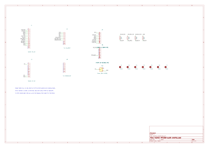
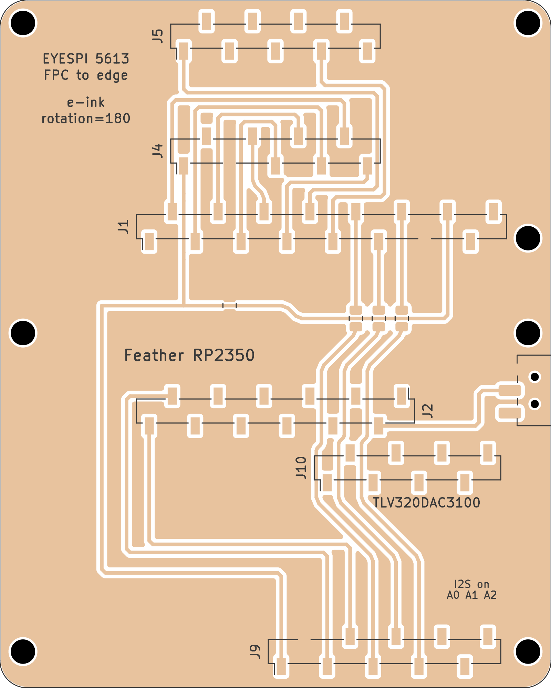
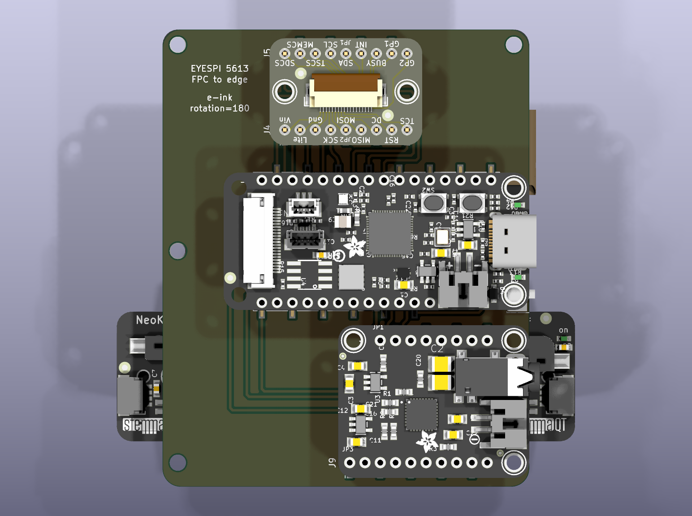
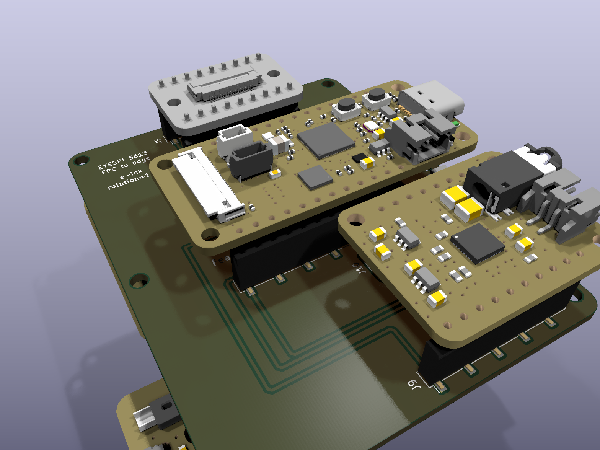
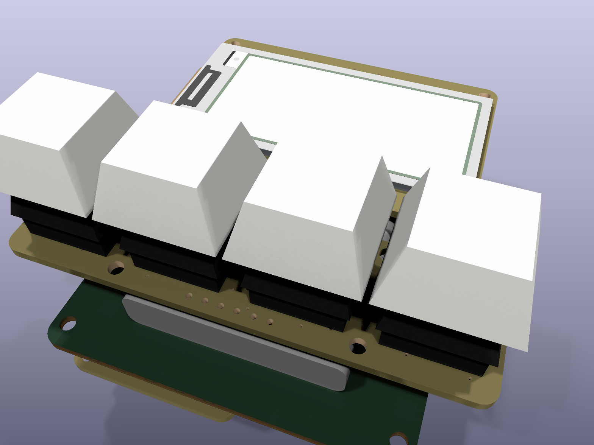
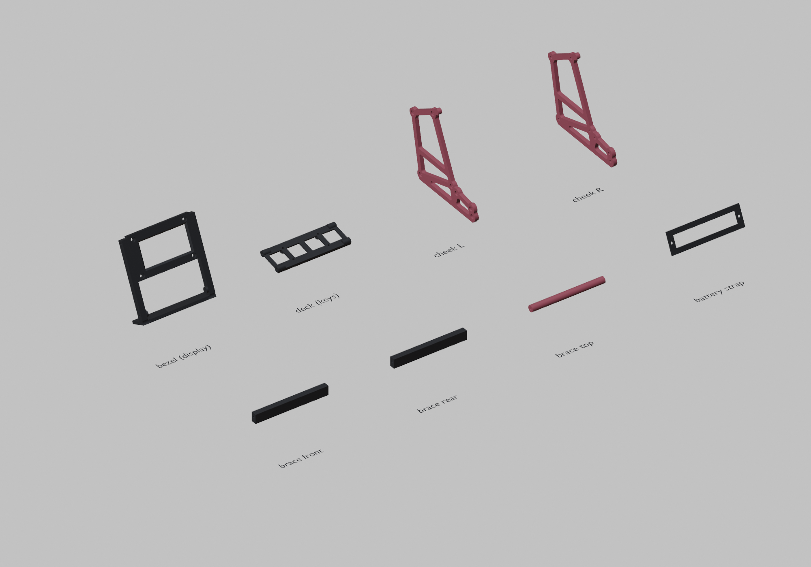
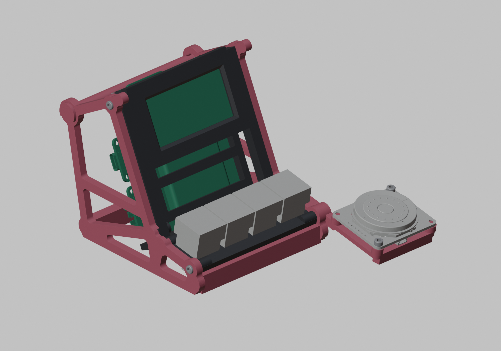
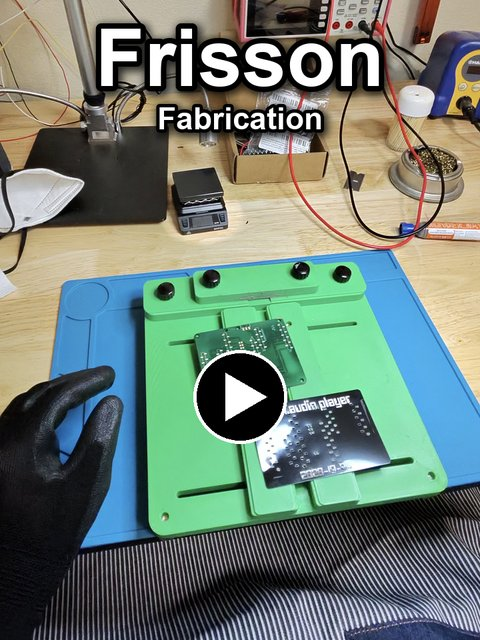
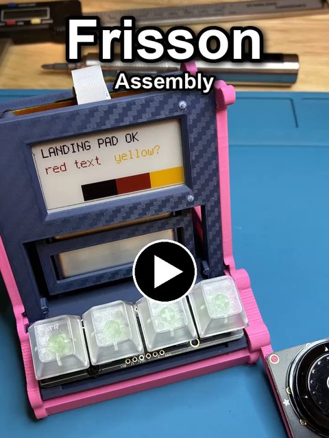
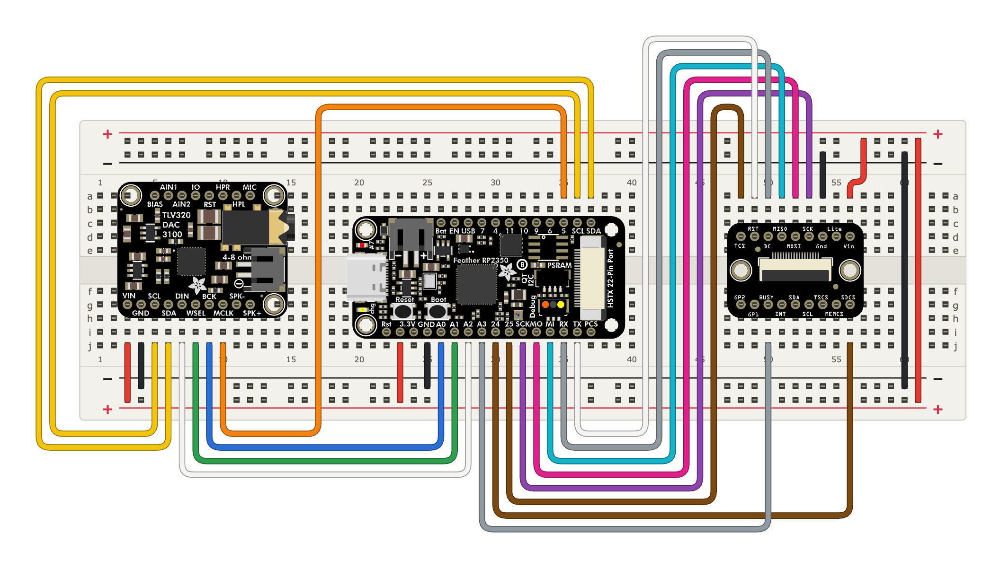

Frisson
A desktop audio player with a quad-colour e-ink screen, four keys and a thumb wheel. It will let you pick a letter to jump straight to an artist, album or song, so you never scroll through a long list.
It will also play FLAC files at up to 24-bit/96 kHz, higher quality than a CD. Some people get frisson, a chill or goose bumps on the neck, from music they love, and that slightly better fidelity can make it easier to feel.
Break apart
Circuit anatomy
The board on its own
Schematic

Landing pad PCB




The stand and printed parts


Build videos


Without the landing pad

Downloads
- KiCad project Schematic and board files.
- Enclosure FreeCAD sources and the full model.
- STL files Ready to slice and print.
- Blender Scene scripts used for the renders.
- Anatomy Build sources for the anatomy figure.
- Hardware notes Parts list and wiring.
- Design notes How the parts were chosen and laid out.
- Printing notes Print settings for the stand.